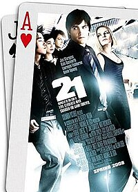
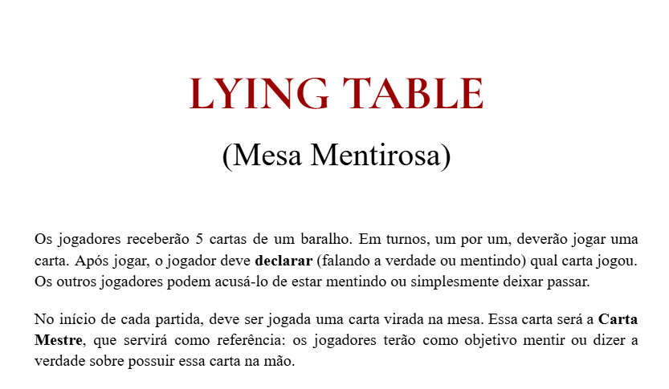

Matéria
Nesta aula, iniciamos com uma discussão sobre as dificuldades encontradas nos exercícios do capítulo 4 da plataforma Geekie.one. Em seguida, assistimos ao filme *Quebrando a Banca*, com o objetivo de introduzir e contextualizar conceitos relacionados à Probabilidade. Após o filme, realizamos uma atividade baseada em sua temática, promovendo a aplicação prática dos conteúdos abordados. A avaliação da aula considerou critérios como criatividade, organização e desempenho nas atividades desenvolvidas. (C5, H31 & H32) Link
Nesta aula, abordamos o conteúdo de Probabilidade Condicional, com foco na aplicação prática dos conceitos estudados. Encerramos a atividade com a realização da Avaliação 02, cuja entrega foi realizada por meio do Google Classroom. A proposta da AV2 consistia na criação de um jogo que envolvesse elementos de probabilidade condicional. Para atender à proposta, desenvolvemos o jogo intitulado Lying Table, explorando de forma lúdica e criativa os conhecimentos adquiridos em aula. (C5, H30 & H31) Link Link do Site
Nesta aula, desenvolvemos em grupo um projeto de pesquisa estatística com o Google Forms e Planilhas. Definimos uma pergunta de pesquisa, coletamos respostas, organizamos os dados e calculamos média, mediana, moda e amplitude, além de criar gráficos para facilitar a análise. Por fim, interpretamos os resultados, relacionando a matemática com situações reais e fortalecendo nossas habilidades de análise e interpretação estatística. (C4, H27, H28 & H29) Link

Nesta aula, tivemos contato com conteúdos de estatística, juros e outras aplicações da matemática por meio de uma avaliação (passe). A atividade permitiu verificar o entendimento dos conceitos estudados e identificar pontos de aprendizado a serem reforçados. (C4, H27)

Nesta aula, realizamos diversos aplicações dos conhecimentos de proporção e razão, aprendemos a como podemos economizar nos ingredientes e no dinheiro. (C5, H33) Link